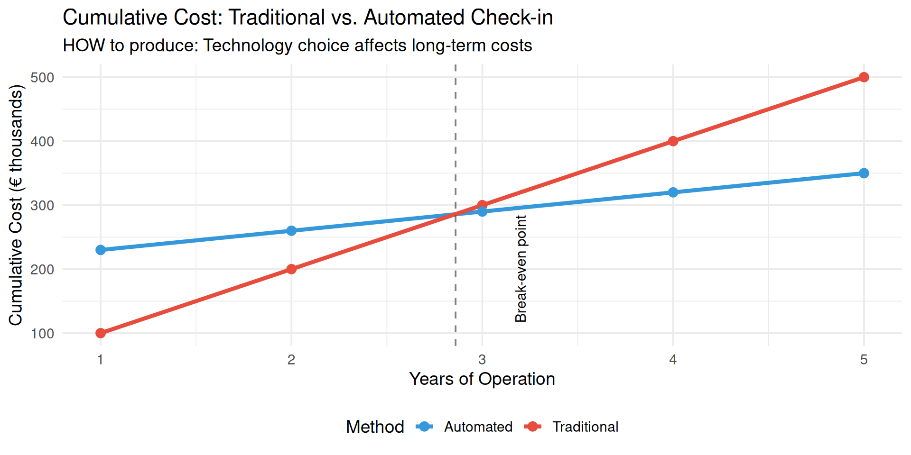
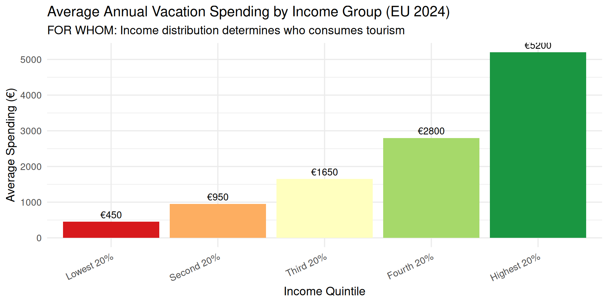
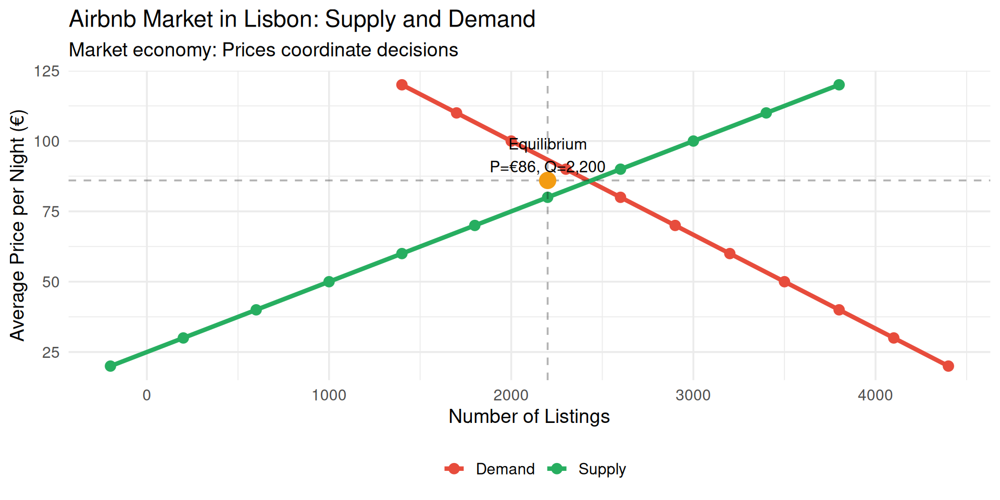

Economics Fundamentals
Lecture 2: Three Economic Problems & Economic Systems
2026
Recap: Lecture 1
Key concepts we covered:
- Economics studies scarcity and efficiency
- Macroeconomics (big picture) vs. Microeconomics (individual decisions)
- Three fundamental questions: WHAT, HOW, FOR WHOM
- Positive (facts) vs. Normative (values) economics
Today: How do different economic systems answer these questions?
The Three Fundamental Economic Problems
Every society must solve:
- WHAT goods and services to produce?
- Which products? How much of each?
- Current consumption vs. future investment?
- HOW to produce them?
- Which technologies? Which resources?
- Labor-intensive vs. capital-intensive?
- FOR WHOM are goods produced?
- How to distribute output?
- Who gets what share of production?
Problem 1: WHAT to Produce?

Hotels

Transport

Restaurants

Beach Facilities

Museums
Problem 2: HOW to Produce?
Different Production Methods: Hotel Check-in
Traditional Method
- Human receptionists
- Paper forms
- Phone bookings
- High labor cost
- Flexible service
- Personal touch
Cost per check-in: ~€8-12
Automated Method
- Self-service kiosks
- Online booking
- Mobile check-in
- High capital cost
- 24/7 availability
- Limited flexibility
Cost per check-in: ~€2-4
Decision factors: Initial investment, labor costs, customer preferences, technology reliability
HOW: Production Cost Comparison
Problem 3: FOR WHOM?

Sport Tourism

Family Vacations

Business Travel

Luxury Travel

Nature Tourism

Adventure Travel
Economic Systems: Overview
Three fundamental ways to organize an economy:
- Market Economy (Laissez-faire)
- Decisions by individuals and firms
- Prices and markets coordinate
- Centrally Planned Economy
- Government makes decisions
- Central authority coordinates
- Mixed Economy (Most common today)
- Combination of market and government
- Balance varies by country
Market Economy
Definition: Individuals and companies make key production and consumption decisions through markets
Key Features:
- Private ownership of resources
- Price mechanism coordinates decisions
- Profit motive drives production
- Competition among firms
- Consumer sovereignty (monetary votes)
Tourism Example: Hotel chains decide what to build, where, and at what price based on profit expectations
How Markets Work: Example
Airbnb in Lisbon (Market Mechanism)
Centrally Planned Economy
Definition: Government makes most production and distribution decisions
Key Features:
- Government ownership of resources
- Central planning replaces markets
- Production quotas set by authority
- Price controls by government
- Administrative allocation of resources
Historical Example: Soviet tourism industry (state-owned hotels, fixed prices, limited choice)
Modern Examples: Cuba, North Korea (though moving toward mixed systems)
Market vs. Centralized: Tourism Example
Market System
Hotel Construction Decision:
✓ Private investor analyzes demand
✓ Builds if profitable
✓ Price determined by market
✓ Competition ensures efficiency
Result: Hotels where tourists want them
Centralized System
Hotel Construction Decision:
✓ Government planners decide
✓ Build according to 5-year plan
✓ Prices set administratively
✓ No competition
Result: May not match demand
Mixed Economy
Definition: Combination of market mechanisms and government intervention
Characteristics:
- Markets direct daily economic activity
- Government regulates and provides public goods
- Balance varies by country and ideology
Government Roles:
- Increase efficiency (regulate monopolies, address externalities)
- Promote equity (redistribute income, social safety net)
- Foster stability (manage inflation, unemployment, growth)
Mixed Economy in Tourism
Portugal Tourism (Mixed System)
Production Factors
To answer the three questions, economies use factors of production (inputs):
Land
Natural resources
- Agricultural land
- Energy resources
- Minerals
- Clean air & water
Tourism: Beaches, mountains, climate
Labor
Human effort
- Physical work
- Mental work
- Skills & education
- Time spent
Tourism: Hotel staff, guides, chefs
Capital
Produced resources
- Machinery
- Buildings
- Infrastructure
- Technology
Tourism: Hotels, airports, booking systems
Production Factors in Tourism
European Tourism Employment (2022)

Source: OCDE
Comparing Economic Systems
| Aspect | Market Economy | Centrally Planned | Mixed Economy |
|---|---|---|---|
| Ownership | Private | State | Both |
| Coordination | Prices/markets | Central plan | Markets + regulation |
| Incentives | Profit | Quotas/orders | Profit + public interest |
| Innovation | High | Low | Medium-High |
| Efficiency | Generally high | Often low | Variable |
| Equity | Low (unequal) | High (equal poverty) | Medium |
| Examples | (Pure: rare) | Cuba, N. Korea | USA, EU, Portugal |
Real-World Example: Tourism Recovery
Different Systems, Different COVID-19 Responses
Market-Led (Portugal)
- Private hotels closed voluntarily
- Government support (furlough)
- Market-driven reopening
- Rapid innovation (safety protocols)
- Fast recovery: 31.6M visitors (2024)
Centrally-Planned (Cuba)
- State-owned hotels closed by decree
- No market signals
- Political decision to reopen
- Limited innovation
- Slower recovery: ~50% of 2019 levels
Summary: Key Concepts
- Three economic problems: WHAT, HOW, FOR WHOM
- Market economy: Decisions by individuals/firms via prices
- Centrally planned: Government makes decisions
- Mixed economy: Combination (most common today)
- Production factors: Land, Labor, Capital
- Each system has trade-offs (efficiency vs. equity)
- Portugal tourism: Mixed system (mostly private, some government)
Exercises
Practice Time!
Let’s apply what we’ve learned.
Exercise 1: Multiple Choice
Question: In a market economy, the question “FOR WHOM are goods produced?” is primarily answered by:
A. Government planners deciding who gets what
B. Equal distribution to all citizens
C. Willingness and ability to pay D. First-come, first-served basis
Answer: C
Explanation: In market economies, goods go to those who are willing to pay more for them, which answers “for whom.”
Exercise 2: Multiple Choice
Question: Which of the following is an example of the capital factor of production in tourism?
A. A tour guide’s knowledge and skills
B. The beach at Algarve
C. A hotel building in Lisbon
D. The manager’s decision-making ability
Answer: C
Explanation: Capital consists of produced goods used to make other goods/services. The hotel building is capital. A is labor, B is land, D is labor/entrepreneurship.
Exercise 3: Open Question
Scenario: The Portuguese government is considering two policies for tourism development:
- Policy A: Let private investors freely build hotels wherever they want (market approach)
- Policy B: Government decides where hotels should be built and provides subsidies (planned approach)
Questions:
- Identify which economic system each policy represents
- List 2 advantages and 2 disadvantages of each policy
- Calculate: If a private hotel costs €5M to build and generates €800k annual profit, what’s the payback period?
- Recommend which policy Portugal should adopt (justify with economic reasoning)
Exercise 3: Solution (Part 1)
a) Economic systems:
- Policy A: Market economy approach (laissez-faire)
- Policy B: Centrally planned economy approach
b) Advantages and Disadvantages:
| Policy A (Market) | Policy B (Planned) |
|---|---|
| ✓ Efficient allocation (demand-driven) | ✓ Can correct market failures |
| ✓ Innovation & competition | ✓ Ensures regional development |
| ✗ May ignore externalities | ✗ Information problems |
| ✗ Unequal regional development | ✗ Bureaucratic inefficiency |
Exercise 3: Solution (Part 2)
c) Payback period calculation:
\[\text{Payback Period} = \frac{\text{Initial Investment}}{\text{Annual Profit}} = \frac{€5,000,000}{€800,000} = 6.25 \text{ years}\]
d) Recommendation: Mixed approach (combination)
Reasoning:
- Use market mechanism (Policy A) as primary driver
- Private sector is more efficient at identifying demand
- Competition drives innovation and service quality
- Add selective government intervention (Policy B elements)
- Regional development incentives (e.g., tax breaks for interior regions)
- Environmental regulations to prevent over-tourism
- Infrastructure investment in under-served areas
This is what Portugal actually does – mostly private sector with strategic government support!
Next Lecture
Lecture 3 (February 12, 2026):
- Rationality and Economic Behavior
- Choices and Decision-Making
- Opportunity Cost (crucial concept!)
Preparation: Think about a recent choice you made. What did you give up to make that choice?
Thank You!
Questions?
Contact: paulo.fagandini@ext.universidadeeuropeia.pt
Next class: Wednesday, February 12, 2026

Economics of Tourism | Lecture 2